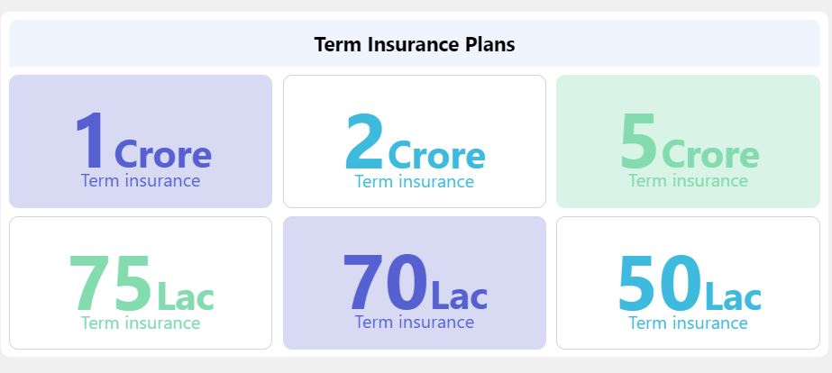

Life insurance is a contract between an insurance policy holder and an insurer or assurer, where the insurer promises to pay a designated beneficiary a sum of money upon the death of an insured person.
Life Insurance can be defined as a contract between an insurance policy holder and an insurance company, where the insurer promises to pay a sum of money in exchange for a premium, upon the death of an insured person or after a set period.
Term life insurance is coverage that lasts for a period of time chosen at purchase. This type of life insurance commonly covers 10-, 20- or even 30-year periods. If you die during the covered period, the policy will pay your beneficiaries the amount stated in the policy. If you don’t die during that time, no one gets paid.
Term life is popular because it offers large payouts at a lower cost than permanent life. It’s also a temporary solution. It exists for the same reason temporary tattoos and hair dyes do — sometimes a little while is long enough.
Reasons you may want term life insurance include:
1. You want to make sure your child has money to go to college, even if you die.
2. You have a mortgage that you don’t want to saddle your spouse with after your death.
3. You can’t afford the higher premiums of permanent life insurance and still want coverage.
Established in 1956, Lic-Of-India is the oldest and largest insurance company and boasts of a very large customer base. With a claim settlement ratio of 98.62% for the financial year 2020-21, LIC offers a wide range of insurance products catering to various needs of its customers. The claim payout of LIC is great and offers a hassle-free and quick claim experience. The high CSR ratio and the annual premium is an indicative of the quick settlement of death claims and its remarkable performance in the market. There are number of benefits offered by LIC such as the variety of products, easy claim procedure, dedicated customer support, and a simplified purchasing process. The company has a large distribution network comprising of 8 zonal offices, 2048 computerized branch offices, and 1381 satellite offices.
State Bank Of India one of the most trusted insurers in India, was incorporated in 2000 and is registered with the IRDAI in 2001. It is a collaboration between India’s largest bank, State Bank of India, and BNP Paribas Cardif. Serving millions of customers across the nation, the diverse range of products offered by SBI Life caters to individuals as well as a group of customers by pension, protection, health, and savings solutions. The claim settlement ratio (CSR) for FY 2020-21 is 93.09%, which indicates the fast claim settlements. The company also offers an easy and convenient way to file a claim through offline as well as online mode. Apart from high CSR, SBI Life offers various benefits including financial protection to family, hassle-free claim settlement process, flexible premium and payout options, and tax savings benefit as per prevailing laws of ITA, 1961. Another distinguishing feature is that the insurer operates across India through its 947 offices, 18,498 employees, and more than 29000 partner branches.
ICICI prudential life insurance is supported by ICICI Bank Ltd and Prudential Corporation Holdings Ltd. The company commenced its operations in the financial year 2001. With a claim settlement of 97.90% in FY 2020-21, it has constantly been amongst the top insurers in the Indian insurance industry. The company offers one day of death claim settlement option. To provide comprehensive protection, the insurer offers a wide range of insurance products to meet different customer needs including term insurance, unit-linked plans, retirement, savings, and protection plans. ICICI Prudential Life Insurance has implemented several initiatives to offer cost-effective products, consistent performance of a fund, superior quality service, and an easy, hassle-free claim settlement process to their customers.
HDFC Life Insurance HDFC Life Insurance Company Limited is a collaboration between HDFC Limited, the leading housing finance institution of India, and abrdn plc, a global investment company. Founded in 2000, HDFC Life is a popular long-term insurer in India, offering an extensive range of individual as well as group insurance solutions that meet several customer requirements such as pension, protection, savings, annuity, investment, and health. HDFC Life benefits its customers from its overall presence across the nation with 372 branches and various tie-ups and partnerships. The company offers a simple and hassle-free process of claiming insurance benefits and also provides a facility to settle death claims in 1 day. The claim settlement ratio of HDFC Life is 98.01% in FY 2020-21, which indicates the quick death claim settlements and reliability of the insurer towards its customers.
IndaiFirst Life Insurance Indiafirst life insurance company, headquartered in mumbai, is a joint scheme between andhra bank (now called union bank of india), legal & general and bank of baroda., indiafirst life insurance with a paid-up share capital of rs. 663 cr., is one of the youngest life insurers in india. the company offers an extensive range of insurance products ranging from term plans to savings plans which can be purchased as per the financial needs. the main benefits of india first life insurance plans are their easy-to-understand insurance products at low premium rates, dedicated customer support, tax-saving benefits, availability of online plans and offline plans. the company offers a simplified claim settlement process that allows the nominee to file and track their claims easily. the csr achieved in fy 2020-21 is 96.81% for individual death claims.
| Life Insurance | Coverage |
|---|---|
| Team Plans | Pure Risk Cover |
| ULIPs | Insurance+Investment Benifits | Endowment Plans | Insurance cover + Savings | Money Back plans | Insurance cover withe peroidic returns | Whole Life Insurance Plans | Coverage for a lifetime | Child plans | To create for child's education, etc. | Retirement Plans | Financial cushion aiding retirement. |
Term Insurance policy a term insurance plan offers death cover for a stipulated time period. God forbid, in the event of the sudden demise of the insured during the policy tenure, the life insurance provider offers a pre-decided death benefit as a lump sum, as a monthly/ annual pay-out, or as combined benefits to the nominee.
ULIP A unit-linked insurance plan or ULIP is a type of life coverage plan that offers a perfect blend of insurance & investment. It comes with a long-term investment opportunity along with valuable investment flexibility. The premium paid towards a ULIP is partly used as a risk-cover for life coverage plan and the remainder is invested in market funds such as debts, equities, bonds, market funds, hybrid funds etc.
Endowment Plans An endowment plan is a life insurance contract designed to pay a lump sum after a specific term (on its 'maturity') or on death. Typical maturities are ten, fifteen or twenty years up to a certain age limit. Endowment policy also pay out in the case of critical illness. Endowment policy are typically traditional with-profits or unit-linked including those with unitised with-profits funds the holder then receives the surrender value which is determined by the insurance company depending on how long the policy has been running and how much has been paid into it.
Money Back Plans Money back plans protect your family's financial interests from circumstances such as death or critical illness of the policyholder. Periodic payouts create wealth for meeting financial commitments at key stages in life.
Money back plans protect your family's financial interests from circumstances such as death or critical illness of the policyholder. Periodic payouts create wealth for meeting financial commitments at key stages in life.Whole Life Insurance Plans An endowment plan is a life insurance contract designed to pay a lump sum after a specific term (on its 'maturity') or on death. Typical maturities are ten, fifteen or twenty years up to a certain age limit. Endowment policy also pay out in the case of critical illness. Endowment policy are typically traditional with-profits or unit-linked including those with unitised with-profits funds the holder then receives the surrender value which is determined by the insurance company depending on how long the policy has been running and how much has been paid into it.
Child Plans A child plan acts as a tool to generate funds for the policyholder’s child. A child plan helps one build a corpus for their child that can be used for the child’s education and wedding. Generally, child plans either provide benefits as installments on an annual basis or a 1-time payout once the insured child is 18 years of age. In an unfortunate event of the untimely demise of the policyholder during the policy term, immediate premium payment is payable by the insurer. In such cases, some insurer waive off future premiums but the plan continues till the opted policy term.
Retirement Plans An annuity is a contract between the policyholder and the insurance company, wherein the policyholder needs to make either lump-sum payment or pay in installments to receive regular income as an annuity after retirement. The annuities can be paid either immediately after payment of the lump-sum amount or after completion of the specific tenure.
The perks of buying a life insurance policy are beyond protecting the policyholder's family in tough times. Undoubtedly, it is a necessity for a breadwinner to safeguard their dependents in case of their unfortunate and untimely demise, accident or physical disabilities that lead to a loss of income. Having said that, there is a long list of other benefits that make it a must-have. Sadly, most people are not aware of the many benefits offered by a life plan. All they care about are the death and disability benefits. However, there are plenty of other benefits offered by life policies such as maturity benefits, tax benefits etc.
Let's take a look at the benifits:
In lending agreements, collateral is a borrower's pledge of specific property to a lender, to secure repayment of a loan. The collateral serves as a lender's protection against a borrower's default and so can be used to offset the loan if the borrower fails to pay the principal and interest satisfactorily under the terms of the lending agreement.
On this page you will find bill payment offers and bill payment coupons from various bill payment portals like Paytm, Freecharge, Mobikwik, Airtel, Amazon Pay, PhonePe, Google Pay and more. All these bill payment portals offer convenience of paying bills of mobile postpaid, electricity, DTH, utility bills etc.
A discount period is the amount of time a cash discount is available for a customer to make a reduced cash payment. In other words, this is the time period that a vendor is willing to reduce the price of a product if the customer will pay for it in cash.
Business lending offers great opportunities for credit unions, but the inherent inefficiencies in loan processes, from manual paper processing to redundant data entry, typically translate into frustration for both the business member and the lender. If credit unions can find a way to incorporate automation to streamline this previously burdensome process, they can differentiate themselves by saving time, reducing costs and boosting the overall member experience.
The term tax benefit refers to a tax law that helps taxpayers reduce their tax liabilities. Tax benefits are often created as a type of incentive for promoting responsible behaviors or commercial activities. These benefits range from deductions to tax credits to exclusions and exemptions. Benefits can cover various areas, such as programs for families, education, employees, and natural disasters. Tax benefits are created through tax regulation determined by federal, state, and local governments.
There are different plans offered by the life insurance Insurance Companies In IndiaIt sometimes becomes a task to select the best plans from various optionsand available the same at the best coverage and a pocket-friendly premium.
Listed below are some key pointers that will help you choose the best life insurance policy.
1. The Repuation Of the Provider: The reputation of a Pay Per Head provider is the seal of quality that guarantees that their products and services are of the highest quality. In addition, reputation is also an indicator of the company’s integrity and the team behind the Pay Per Head provider. For example, if you partner with a company that has a bad reputation, you can expect the worst. This is because these operators have no interest in their clients.
2. Claim Settlement Ratio: Claim settlement ratio is the percentage of claims settled by the insurance company against the total number of claims made against it. So, if an insurance company settles 95 out of 100 claims made on it in one financial year, its claim settlement ratio would be 95%.
3. Evaluation Of Sum Assured:
The sum assured is the amount payable on the occurrence of an event insured against under a benefit policy, such as the death of the insured.
4. Customer Review: Customer reviews are pieces of feedback given to a business based on a customer's experience with the organization. These reviews can be public or private and are collected by either the company or third-party review sites.